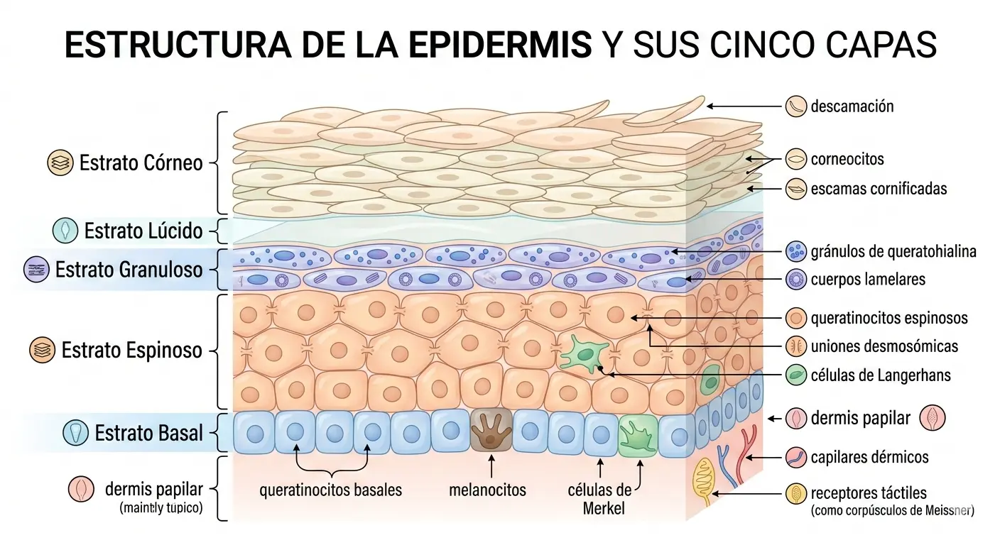
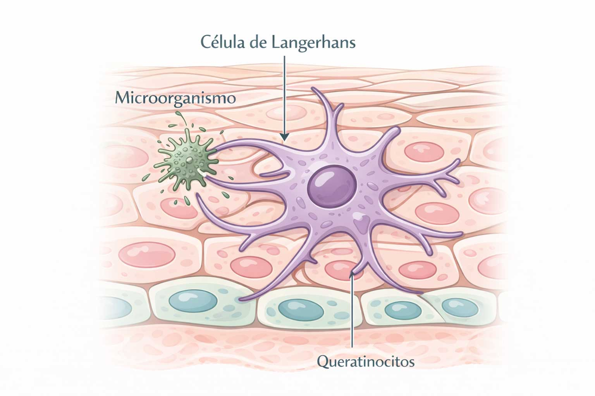

La epidermis es la capa más externa de la piel y está formada por cinco estratos: basal, espinoso, granuloso, lúcido y córneo.
No contiene vasos sanguíneos ni terminaciones nerviosas. En ella se desarrollan dos procesos esenciales:
la queratinización, que da lugar a la formación de queratina, y la melanogénesis, responsable de la producción de melanina.
Su función principal es proteger al organismo frente a agresiones externas, microorganismos y pérdida de agua.
Capas internas de la epidermis y células clave
El estrato basal es la capa más profunda y está formado por varios tipos de células:
- Queratinoblastos: células precursoras de los queratinocitos.
- Melanocitos: producen melanina y la transfieren a los queratinocitos.
- Células de Merkel: especializadas en la percepción táctil.
Por encima se encuentra el estrato espinoso, compuesto por queratinocitos unidos por desmosomas.
Aquí también se localizan las células de Langerhans, esenciales en la defensa inmunitaria cutánea.
Queratinocitos
Los queratinocitos son las células más abundantes de la epidermis. Producen queratina blanda,
una proteína estructural que fortalece la piel. A medida que maduran, ascienden desde el estrato basal hacia la superficie,
formando los distintos estratos epidérmicos.
En su etapa final se transforman en corneocitos, células sin núcleo que se desprenden de forma natural
en un ciclo que dura entre 28 y 45 días.
En sus membranas se encuentran acuaporinas, canales que permiten el paso de agua, minerales y vitaminas,
contribuyendo al equilibrio hídrico de la piel.

Melanocitos
Los melanocitos producen melanina a partir del aminoácido tirosina mediante la enzima tirosinasa.
La melanina se transfiere a los queratinocitos a través de los melanosomas y determina el color de la piel.
Existen dos tipos principales de melanina:
- Eumelanina: marrón oscuro o negra.
- Feomelanina: amarilla o rojiza.
La actividad melanocítica está influida por factores genéticos, hormonales y ambientales, especialmente la radiación UV y la luz visible.

Células de Langerhans
Las células de Langerhans forman parte del sistema inmunológico cutáneo. Detectan microorganismos, los capturan y los degradan.
Si no pueden eliminarlos, migran a los ganglios linfáticos para presentarlos a los linfocitos T, activando la respuesta inmunitaria.

Estrato córneo
Es la capa más externa de la epidermis y actúa como una barrera protectora frente a agresiones externas y pérdida de agua.
Está formado por:
- Corneocitos: células sin núcleo que forman la barrera física.
- Lípidos cementantes: ceramidas, colesterol y ácidos grasos.
- Factor Natural de Hidratación (FNH): sustancias higroscópicas que retienen agua.
Esta estructura funciona como una muralla que impide la entrada de agentes externos y mantiene el equilibrio hídrico de la piel.
Lípidos cementantes
Entre los corneocitos se encuentra un “cemento” lipídico compuesto por ceramidas, colesterol y ácidos grasos saturados y poliinsaturados.
Su función es impermeabilizar la piel y regular la pérdida de agua transepidérmica (TEWL).
Factor Natural de Hidratación (FNH)
El FNH está formado por aminoácidos, sales minerales, urea, lactatos y componentes del sudor.
Su función es atraer y retener agua dentro del estrato córneo, manteniendo la hidratación y evitando la descamación.
Manto hidrolipídico
En la superficie del estrato córneo se encuentra el manto hidrolipídico, una película protectora ligeramente ácida
formada por sebo, sudor y productos de la queratinización.
Mantiene el equilibrio de la microbiota cutánea y contribuye a definir el tipo de piel.